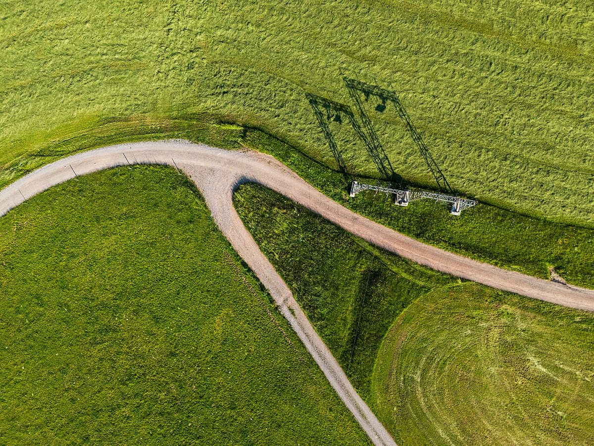

Discover the Enchanting Black Forest: A Travel Guide

The Black Forest, or Schwarzwald in German, is one of Germany's most picturesque regions. Known for its dense woodlands, charming villages, and scenic landscapes, it offers a perfect escape for nature lovers and culture enthusiasts alike. Whether you're planning a short getaway or a longer stay, this guide will help you make the most of your visit to the Black Forest.
Getting There
The Black Forest is easily accessible from major cities in Germany. If you're flying in, the nearest airports are in Stuttgart, Frankfurt, and Basel. From there, you can take a train or rent a car to reach the forest. The region is well-connected by road and rail, making it convenient for both domestic and international travelers.
Best Time to Visit
The Black Forest is beautiful year-round, but the best time to visit depends on your interests. Spring and summer (May to September) are ideal for hiking and outdoor activities, with pleasant weather and blooming flora. Autumn (October) offers stunning foliage, while winter (December to February) transforms the region into a snowy wonderland, perfect for skiing and cozy evenings by the fire.
Top Highlights
1. Titisee Lake: This crystal-clear lake is a must-visit spot for its serene beauty and recreational activities like boating and swimming.
2. Triberg Waterfalls: One of Germany's highest waterfalls, Triberg is a breathtaking natural wonder surrounded by lush greenery.
3. Freiburg im Breisgau: This vibrant city is known for its historic architecture, cobblestone streets, and lively atmosphere.
4. Black Forest Open-Air Museum: Step back in time and explore traditional Black Forest houses and lifestyle at this fascinating museum.
5. Feldberg: The highest peak in the Black Forest, Feldberg offers stunning panoramic views and is a popular spot for hiking and skiing.
Local Cuisine
No visit to the Black Forest is complete without indulging in its local cuisine. Be sure to try the famous Black Forest Cake, a rich chocolate cake layered with cherries and whipped cream. Other regional specialties include Black Forest ham, Spaetzle (a type of egg noodle), and Maultaschen (a filled pasta dish). Pair your meal with a glass of locally brewed beer or a fine Baden wine.
Practical Tips
- Wear comfortable shoes, especially if you plan on hiking.
- Bring a camera to capture the stunning landscapes.
- Check the weather forecast and pack accordingly, as the Black Forest can have varying climates.
- Respect nature and follow local guidelines to preserve the beauty of the area.
With its enchanting landscapes and rich cultural heritage, the Black Forest promises an unforgettable travel experience. Whether you're seeking adventure, relaxation, or a taste of local traditions, this German gem has something for everyone. Happy travels!
Haiktec
- Volunteer Event Budget Planner & Donation Tracker
- The Busy Dog Parent's Guide: 7 Simple Steps to a Calmer Canine Companion
- YouTube Ad Revenue & Expense Tracker for Content Creators
Text mit KI erstellt und automatisch geprueft.